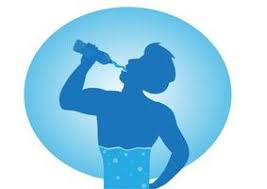
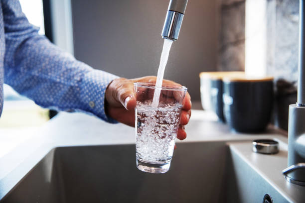
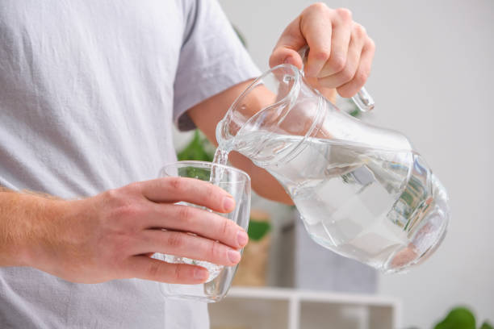
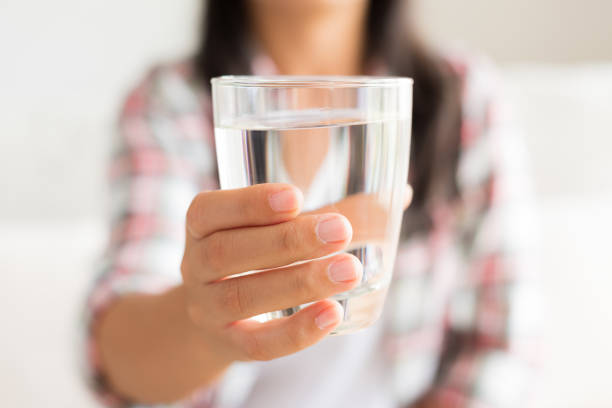
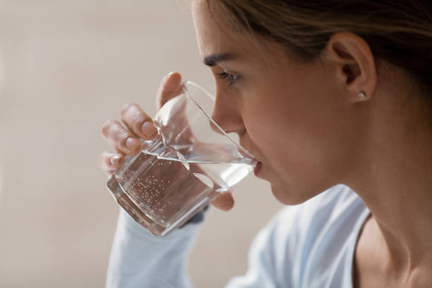

Beneficios de tomar agua:
Beber agua es fundamental para la salud porque ayuda a que el cuerpo funcione correctamente. El agua es el principal componente del cuerpo humano, y cada célula, tejido, y órgano necesita agua para funcionar.
Hidratación:
El agua ayuda a transportar nutrientes a las células, y a eliminar desechos a través de la orina, la transpiración, y las deposiciones.
Digestión:
El agua ayuda a descomponer los alimentos y a ablandar las heces, lo que ayuda a evitar el estreñimiento.
Temperatura corporal:
El agua ayuda a mantener la temperatura corporal en niveles normales.
Atriculaciones:
El agua lubrica y amortigua las articulaciones.
Presión Arterial:
El agua puede ayudar a regular la presión arterial.
Dolores de cabeza:
Beber agua puede ayudar a prevenir y aliviar los dolores de cabeza, que son un síntoma común de deshidratación.
Sueño:
Beber agua puede ayudar a reducir los trastornos del sueño.